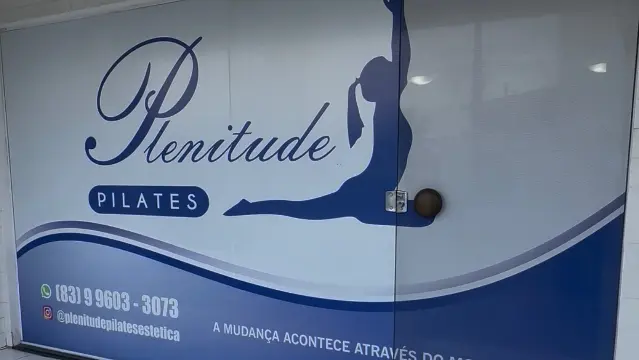

Pilates
Conheça nosso espaço de aparelhos e consulte as possibilidades de aulas com nossa equipe.
Saber mais sobre PilatesNo Cristo Redentor, João Pessoa
Pilates, Fisioterapia e Reabilitação. Conheça nossos atendimentos e o espaço em que recebemos você.
Conversar sobre meu atendimentoConheça nossos cuidados
Converse com nossa equipe sobre o atendimento que procura e consulte disponibilidade para começar.
Conheça nosso espaço de aparelhos e consulte as possibilidades de aulas com nossa equipe.
Saber mais sobre PilatesConte o que você procura e saiba como combinar seu atendimento na unidade Cristo.
Consultar atendimentoFale com a gente sobre sua necessidade e converse com a equipe sobre o acompanhamento.
Conversar com a equipe
Venha nos conhecer na Rua Horácio Trajano de Oliveira, no Cristo Redentor. Combine sua visita com nossa equipe e tire suas dúvidas antes de vir.
Acompanhe nosso InstagramFale com a gente para consultar os atendimentos e os horários disponíveis.
Agendar pelo WhatsAppFale com a gente pelo WhatsApp. Conte o atendimento que procura e consulte os horários disponíveis.
Converse com nossa equipe e combine sua visita antes de vir.
Nosso WhatsApp é o canal para conhecer as opções e os valores atuais.